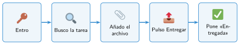

Archivos, carpetas y la plataforma de clase
🤔 Pienso5 min
Qué hago aquí: Piensa un momento y contesta con lo que ya sabes. No pasa nada si no lo sabes: es para empezar.
Tres compañeros han guardado el mismo trabajo. ¿Qué nombre encontrarás mejor dentro de un mes?
Documento1.docx trabajo final YA.docx UD01_normas_Garcia.docx
📖 Leo y aprendo15 min
Qué hago aquí: Lee despacio, mira los dibujos y los ejemplos, y quédate con la idea clave del final.
Todo lo que guardas en el ordenador es un archivo: un texto, una foto, un diseño o un programa.
El nombre de un archivo tiene dos partes:
La extensión dice qué tipo de archivo es.
| Extensión | Tipo de archivo |
|---|---|
.docx .pdf | texto |
.jpg .png | imagen |
.stl | diseño en 3D |
.sb3 | programa de Scratch |
Los archivos se ordenan en carpetas, como los papeles en un archivador. Una carpeta puede tener otras carpetas dentro.
La plataforma de clase está en la nube: en ordenadores de internet. Allí ves las tareas y entregas tus trabajos.

✏️ Hago25 min
Qué hago aquí: Haz las actividades en orden. Empieza siempre por las básicas.
En la nube, crea una carpeta Taller. Dentro, crea una carpeta BloqueI.
Une cada archivo con su tipo.
robot.sb3 | • • | imagen |
caja.stl | • • | texto |
foto.jpg | • • | programa de Scratch |
normas.pdf | • • | diseño en 3D |
Corrige estos nombres: mi trabajo.docx y diseño pieza.stl.
Escribe un documento con tus tres normas favoritas del taller. Guárdalo con un buen nombre en BloqueI y entrégalo en la plataforma.
Escribe la ruta completa de tu documento, carpeta por carpeta.
🚀 Amplío (si quieres saber más)
Qué hago aquí: ¿Has terminado? Lee la curiosidad o elige el reto. Es voluntario.
Busca cómo hacer que el ordenador muestre siempre las extensiones. Escribe los pasos.
✅ Compruebo5 min
Qué hago aquí: Contesta sin mirar la ficha y marca cómo lo llevas.